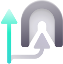

Proton VPN for Windows. Every restriction removed.
ProtonNext is a clean, telemetry-free build of the official Proton VPN Windows client. Tier-2 (Plus) client features—including NetShield, Split Tunneling, Port Forwarding, VPN Accelerator, and instant country switching—are unlocked out of the box without a login or subscription.
 Swiss Base Architecture
Swiss Base Architecture
 Sentry & Telemetry Stripped
Sentry & Telemetry Stripped
 100% Auditable C# & Python
100% Auditable C# & Python


Blocks advertisements, tracking scripts, and malware domains at the DNS resolver level (10.2.0.1).


Looks like NSIS. Extracts in 1.45 seconds.
Standard NSIS installers unpack all 2,313 application and WinUI3 runtime files sequentially on a single thread, flushing Win32 file handles and repainting the UI on every file—taking 45+ seconds.
We built a custom single-file C# installer (ProtonNext-Setup.exe) that preserves the exact 505×385 NSIS Modern UI 2 wizard, /S silent flags, and dual-role Uninstall.exe behavior, while streaming the embedded payload directly from memory using 64KB buffers.
Live Extraction Benchmark (2,313 Files / 366 MB)
Compare our in-memory 64KB stream decompression against legacy single-threaded NSIS:
Pre-allocated 94 subdirectories in memory.
Streamed 2,212 client files + 101 CLI files (64KB buffer).
Registered Uninstall.exe & COM IShellLinkW shortcuts.
Unlocked client capabilities
In the stock Proton VPN client, UI controls and client-side services check VpnPlan.IsPaid and MaxTier before allowing access to local network features. ProtonNext unlocks the full client stack.
NetShield DNS Ad & Malware Blocker
NetShield intercepts DNS resolution inside the encrypted tunnel to sinkhole known ad networks, tracking pixels, and malware distribution domains before your browser ever makes a TCP connection.
- Default Mode: BlockAdsMalwareTrackers (Level 2 enabled)
- In-Tunnel Resolver: 10.2.0.1 (Zero-logging Proton DNS)
- Upsell Modals: Suppressed in VpnPlanUpdater.cs
VPN Accelerator, Direct Country Selection & Smart Rotation
Stock free clients lock out country selection, impose cooldown timers on the Change Server button, and frequently get stuck reconnecting to server #1 in the same country. ProtonNext removes all cooldowns and fixes rotation logic.
- ChangeServerModerator.cs: CanChangeServer() → always true (0s delay)
- Rotation Engine: Excludes current server & current country on rotate
- Load Balancing: Samples randomly across the 5 lowest-load nodes per country
Split Tunneling & NAT-PMP Port Forwarding
Exclude latency-sensitive games or local LAN subnetworks from the VPN interface, or force only specific executables through the WireGuard tunnel.
- Modes: Standard (Exclude apps/IPs) & Inverse (Include only selected apps)
- Port Forwarding: NAT-PMP port mapping enabled in client settings
- Paid Server Guard: Strictly filters out non-free endpoints so handshakes never fail

Advanced Kill Switch & Complete Telemetry Removal
Every crash reporter, statistical event queue, and background analytics transmitter has been severed at the source code level. Your client only talks to VPN tunnel endpoints.
- SentryInitializer.cs & sentry.py: Stubbed to no-op (_isEnabled = false)
- StatisticEventSenderBase.cs: EnqueueAsync & SendAsync hard-disabled
- Kill Switch: Standard & Advanced persistent WFP filter enforcement

Verified Free Server Clusters & DNS Configuration
Click any server cluster below to connect to it in the interactive client above. Paid-only server dots are stripped from the map so the client never attempts unauthorized handshakes.
| Country / Hub | Sample Active Free Nodes | Protocols | Uplink | Avg Load | Status |
|---|
DNS Specification & Android Private DNS
Inside the WireGuard tunnel, ProtonNext routes DNS requests to Proton's internal zero-logging resolver (10.2.0.1). Because 10.2.0.1 is an internal tunnel IP, Android's system-wide Private DNS (DNS-over-TLS) setting outside a VPN requires a public DoT hostname:
Command-Line Interface (pvpn-next)
ProtonNext ships with the ProtonVPN-Next-CLI engine under the hood. You can control tunnels directly from PowerShell, Windows Terminal, or automated scripts:
How ProtonNext compares
Side-by-side breakdown between the official Proton VPN Free build, Proton VPN Plus, and ProtonNext.
| Feature / Behavior | Official Proton VPN Free | Official Proton VPN Plus | ProtonNext (v1.0.2) |
|---|---|---|---|
| Subscription Cost | €0.00 | €9.99 / month | €0.00 (Open Source) |
| Account / Email Registration | Required | Required + Payment | Not Required (Auto Guest Auth) |
| Direct Country Selection | Blocked (Random auto-pick only) | Unlocked | Unlocked across all Free clusters |
| "Change Server" Cooldowns | Rate-limited with timer lockouts | No cooldown | 0s cooldown + Multi-country rotation |
| Stuck on Server #1 / Mexico #1 Bug | Frequent | N/A | Fixed (Random top-5 load sampling) |
| NetShield Ad & Tracker Blocker | Paywalled | Included | Unlocked (Level 2 default) |
| Split Tunneling & Port Forwarding | Paywalled | Included | Unlocked |
| Client Telemetry & Sentry Crash Logs | Enabled | Enabled | Hard-disabled in C# & Python |
| Windows Installer Extraction Time | ~45–60 seconds | ~45–60 seconds | ~1.45 seconds (C# 64KB stream engine) |
Key source modifications in this repository
Every change is committed in plain view in our GitHub repository:
FreeServerLocationIntent with rotate:<currentServer> tags and Server.WithName() cloning so the UI always displays the exact connected node instead of defaulting to #1.get_rotate_server() excluding both current node and current country, plus random.choice(rows[:5]) across lowest-load free servers so country connections never bottleneck on server #1.IShellLinkW installer matching NSIS Modern UI 2 (505x385 dialog) that extracts the 2,313-file payload directly from embedded memory streams in ~1.45 seconds.Technical FAQ
Direct answers regarding architecture, installer behavior, and network routing.
Why did you replace the NSIS compiler with a custom C# installer?
NSIS decompresses 2,313 individual DLL and localization files sequentially on a single thread while flushing Win32 file handles and repainting the listbox on every file—taking over 45 seconds. Our handmade C# installer keeps the exact 505×385 NSIS Modern UI 2 interface and /S silent flags, but pre-creates the directory tree and streams from memory with 64KB buffers in 1–2 seconds.
Why can't I click paid-only countries on the map?
While all client-side features (NetShield, Split Tunneling, Change Server, Kill Switch) are unlocked in the client, physical WireGuard key exchanges on paid-only country servers are enforced server-side by Proton's edge routers. We removed the map dots on paid-only countries so you can only click verified working Free server pools.
How does ProtonNext authenticate without a Proton login?
UserAuthenticator.LoginGuestAsync() provisions an anonymous guest session and sets local VpnPlan entitlement to Tier 2 (Plus) with MaxDevicesAllowed = 10, bypassing the login screen and all upsell prompts.
How do I update or uninstall ProtonNext?
Run ProtonNext-Setup.exe at any time to overwrite and upgrade an existing installation in place. To uninstall, run C:\Program Files\ProtonNext\Uninstall.exe or use Windows Installed Apps.